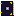

Quest Compendium
画面を見て、状況を把握するAIゲームガイド。ゲームを中断することなく、ヒントやボスの攻略法、世界観を壊さないサポートを受けられます。
Windows用オーバーレイ、各種ブラウザ向けWebアプリ、Steam Deck用プラグインに対応
バージョン 0.5.2 ベータ (64-bit Windows)。無料でお試し：1日10問まで、クレジットカード不要。
直接ダウンロードをご希望ですか？ インストーラーをダウンロードしてください。Windowsで警告が表示される場合があります（理由は？).
Quest Compendiumを手に入れよう
プレイスタイルに合わせて選べます。1つのアカウントで3つのプラットフォームすべて利用可能。
Windows用オーバーレイ
フル機能を体験：最前面オーバーレイ、画面上マーカー、コントローラー対応、プレイ用メモ帳、Steam連携、音声読み上げを搭載。

Microsoft Store経由でインストールおよびアップデートされます。
または、GitHubから インストーラーを直接ダウンロード することもできます。まだコード署名がされていないため、Windowsで警告が表示される場合があります（理由は？).
Webアプリ
インストール不要。サブモニターやスマホ、またはゲームの横でブラウザタブを開いて利用可能。ゲストとして試すことも、サインインしてメモを同期することもできます。
主要なモダンブラウザに対応。
Steam Deck用プラグイン
Decky Loader用プラグイン。クイックアクセスmenuを開き、「詰まった」などのプリセットをタップするだけで、プレイ状況に合った回答が得られます。画面に関する回答ではスクリーンショット上に注目ポイントがマークされ、ガイドを開いたままプレイを続けられます。
- インストール Decky Loader
- Deckyの設定で次をオンにします： Developer Mode
- 次を開きます： Developer、そして選択： URLからプラグインをインストール 以下を入力：
https://github.com/TuriusX/Quest-Compendium-Decky/releases/latest/download/quest-compendium-decky.zip
Deckyストアにはまだないため、手動でインストールします。 GitHubでソースコードを見る
初期プレビュー機能（Windows版）
画面上マーカー機能
回答がゲーム画面内の要素に関係している場合、Windows版アプリならその位置に番号付きラベルを直接表示。回答内のチェックリストと連動します。マーカー機能は登場したばかりで現在も改良中です。現在の仕様については以下をご確認ください。
得意なゲーム
- クラシックRPGや見下ろし型アドベンチャーなど、2Dおよび固定カメラのゲーム
- 移動してもマーカーは位置をキープし、ドアを開けたりシーンが切り替わると自然にフェードアウト
- チェックリストにチェックを入れると、対応するマーカーが自動で消去
現在改善中の点
- 3Dゲームでは立ち止まっている間にマーカーが配置され、カメラを回転させるとフェードアウト
- マーカーの位置が少しずれたり、アイテム名がざっくりしすぎることがあります
- Web版およびSteam Deckでは、回答内のスクリーンショット上に位置がマークされます
うまく動作しないゲームを見つけたら、ぜひ Discordでお知らせください。皆さんのフィードバックが大きな助けになります！
最近のアップデート
- 0.3.6: ガイド機能がさらに使いやすく：アプリ上部（Ctrl+G）で「質問」と「ガイド」をサッと切り替え。今いるエリアのガイドを即座に開き、チェックリストの進捗や見逃しやすい要素を優先表示。気になる項目はワンクリックですぐ質問可能
- 0.3.5: 「既知の情報」パネルを追加。今いる場所の情報を無料で事前確認可能。ワンタップで現在地を確定できるほか、公式サイト上の多数のゲームガイドにもアクセス可能
- 0.3.4: マーカーに短いメモとアイコンが付き、画面上でより安定して追従。ゲーム内の現在地をワンタップで確認可能。敵の弱点検索の精度が向上し、「戦闘をサポート」ボタンも新登場
- 0.3.3: 1日の質問回数カウントに、テーマカラーに合わせたロゴのストーンアイコンを表示
- 0.3.2: 新しいドット絵ロゴに変更
- 0.3.1: 3Dゲームでのマーカー表示を改良。カメラを回すとフェードアウト、ゲーム終了時に連動してクローズ。デザインもすっきりし、動作もより軽量に
必要なすべてを、ひとつのオーバーレイに
ゲームへの没入感を損なわずに、スマートな攻略情報を手に入れたいゲーマーのために。
シームレスなデスクトップオーバーレイ
画面の端にすっきりドッキング、またはゲームの横に浮かせて配置。レトロなドット絵風デザイン（クラシックスタイルも選択可能）を採用。
状況を読み取るスマートなAI
Geminiを搭載。プレイ中のゲームを認識し、スクリーンショットを読み取り、難しい質問にはじっくり思考。いつでも納得のいく詳しい回答を届けます。
ロールプレイ＆効率重視モード
攻略スタイルの選択が可能。数値やデータを徹底的に知りたいなら「効率重視」、ストーリーのネタバレなしで世界観に沿ったヒントが欲しいなら「ロールプレイ」へ。
コントローラー完全対応
コントローラーを置かずに、オーバーレイの表示、よくある質問の選択、ソフトウェアキーボードでの入力までスムーズに操作できます。
プレイ進行メモ帳
鍵の暗証番号やパズルのヒント、クエスト目標などをサッと書き留められるメモ機能。気になった回答はワンクリックでノートに保存可能。
Steam連携＆ガイド
Steamで起動中のゲームを自動検知し、実績を追跡。ゲームのすぐ横に攻略ガイドを表示します。
音声読み上げ
回答を音声で読み上げれば、プレイの手を止める必要はありません。無料の内蔵音声またはPremiumのGemini音声に対応しています。
英語、スペイン語、ポルトガル語
どのプラットフォームでも、アプリと回答はあなたの設定言語に合わせて表示されます。
ひとつのアカウントをどこでも
一度サインインすれば、Windows、Webアプリ、Steam Deck間でコンペンディウム（攻略ガイド）やメモが自動で同期されます。
使い方
3ステップで謎や詰まりを即解消。
-
1
ゲームをプレイする
Quest Compendiumは、ゲーム画面の上に重ねて表示したり、サブモニターに置いたり、Steam Deckのクイックアクセス画面から呼び出せます。
-
2
質問する、またはヒントを選ぶ
質問を入力するか、ショートカットキーを押すか、「詰まった」などのクイックプロンプトを選ぶだけ。画面をキャプチャしてAIに状況を共有することも可能です。
-
3
画面上で回答を確認する
「スタンダード」「効率重視（Min-Max）」「ネタバレ配慮（ロールプレイ）」モードから最適な回答が得られます。収集アイテムのチェックリストのほか、Windowsでは画面上の該当箇所にマーカーも表示されます。
無料ガイド：見逃せないもの
エリアごとのアイテム、秘密、取り逃し要素、敵の弱点をチェックリストで。大事なものを見逃しません。


極上のコンパニオン体験を
無料
クレカ不要、まずは無料でお試し。
- 1日10回質問可能（スクリーンショット付き）
- Windows、Webアプリ、Steam Deckに対応
- 無料の内蔵読み上げ音声
Premium 月額$4.99
コンペンディウムを遊び尽くしたいコアゲーマー向け。
- 1日60回質問可能
- 画面上マーカー（先行機能、Windows向け）
- Premium Gemini読み上げ音声
- 1つのサブスクでWindows、Web、Steam Deckに対応
ベータ版期間中は、すべてのプレイヤーが全機能を利用できます。 アプリ内からいつでもアップグレード可能。
コミュニティに参加しよう
開発状況をチェックしたり、見つけた攻略情報をシェアしたり、次に欲しい機能を教えてください！
YouTube @questcompendium Xもチェック @QuestCompend
よくある質問
Quest Compendiumは無料ですか？
1日10問までクレジットカード不要で無料体験できます。月額$4.99のPremiumプランでは、1日60問の質問に加え、画面上マーカーやGemini音声などのプレミアム機能が利用可能です。なお、ベータ版期間中はすべてのプレイヤーが全機能を利用できます。詳細はこちら： 料金プラン.
画面上マーカーとは？
画面内のアイテムの場所や狙うべき敵などを質問すると、Windowsアプリがゲーム画面のその場所に直接、番号付きのラベルを表示します。本機能は現在アーリーアクセス段階です。2Dやカメラ固定のゲームで最も快適に動作し、移動中もその場に留まり、シーンが切り替わると自然に消えます。3Dゲームでは立ち止まっている間に表示され、カメラを回転させると消える仕様です。なお、ウェブアプリ版やSteam Deck版では、回答内のスクリーンショット上にマークが表示されます。
どんなゲームに対応していますか？
画面に映せるゲームなら何でも対応しています。Quest Compendiumはプレイ中のゲームを認識し、スクリーンショットを分析できます。人気タイトルほど詳しい知識を持っていますが、他のAIと同様に時には間違えることもあるため、重要な情報は念のため確認してください。
アンチチートでBANされる心配は？
Quest Compendiumはゲームの手前で独立したウィンドウとして動作し、標準的な画面キャプチャを使用しています。ゲームファイルを改変したり、コードを注入（インジェクション）したりすることはありません。ただし、一部の対戦系オンラインゲームではオーバーレイや画面キャプチャを制限している場合があり、すべてのアンチチートの挙動を保証することはできません。不安な場合はゲームの利用規約を確認するか、シングルプレイヤーゲームでのご利用をおすすめします。
どんなデータが、どこへ送信されますか？
質問を送信すると、アプリは質問内容、ゲーム名、そして（添付されている場合は）スクリーンショットをQuest Compendiumのサーバーに送信し、そこからGoogleのGemini AIに渡して回答を生成します。サインインしている場合、メモや進行状況はクラウドに同期されます。詳細は プライバシーポリシー.
Windowsで「WindowsによってPCが保護されました」と出ますが、安全ですか？
Quest Compendiumは個人開発者による新しいアプリで、ダイレクトインストーラーがまだコード署名されていないため、Windows SmartScreenの警告が表示されます。問題なければ、 「詳細情報」をクリックしてから 「実行」を押してください。ソースコードは GitHub）。 Microsoft Store版 ではこの警告は表示されません。
Steamアカウントは必要ですか？
いいえ、Steamの連携は任意です。連携すると、Quest Compendiumがプレイ中のゲームを自動検出し、ライブラリの同期や実績の追跡が自動で行われるようになります。
Steam Deckへの導入方法は？
Decky Loaderのプラグインとして提供されており、Deckyの開発者モードの設定にあるリンクからインストールできます。上記の Steam Deckセクション の手順に従ってください。
不具合の報告や機能のリクエストはどこからできますか？
アプリ内設定の「Beta Feedback」ボタン、 公式 Discord, 、またはメール（ hello@questcompendium.com.